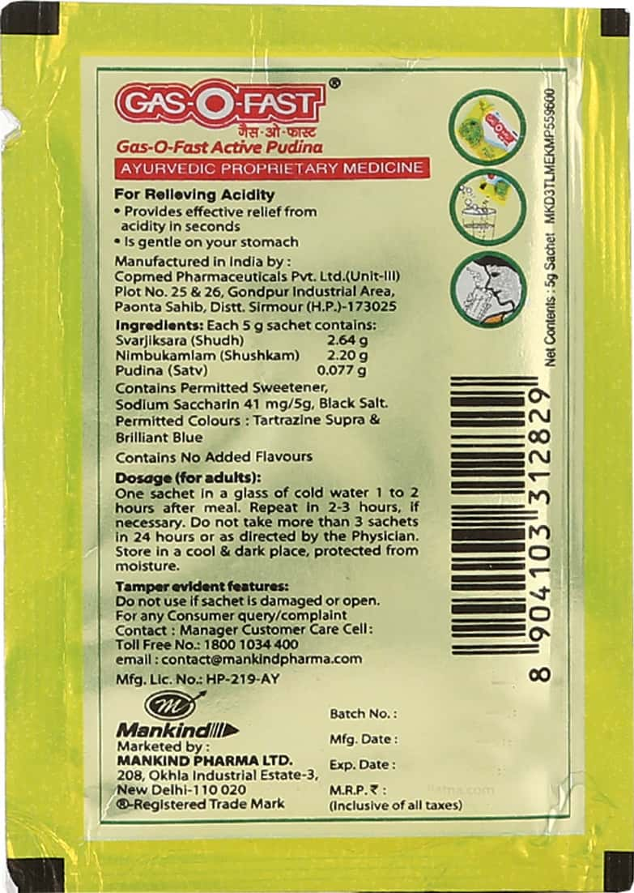
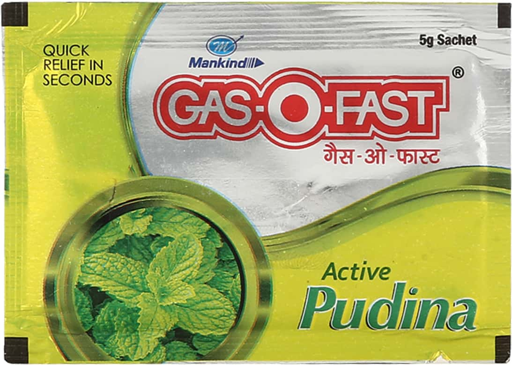

Gas-O-Fast Active Pudina
Gas-O-Fast Active Pudina is a fast-acting and effective remedy for acidity, gas, and indigestion. It is manufactured by Mankind Pharmaceuticals Ltd. and is available in a convenient 5g sachet.
Benefits of Gas-O-Fast Active Pudina
- Provides effective relief from acidity and gas
- Is gentle on your stomach
- Convenient to carry and use
- Pleasant mint flavor
Ingredients
- Sodium Bicarbonate
- Calcium Carbonate
- Magnesium Carbonate
- Dried Ginger Powder
- Pudina (Mentha Piperita) Oil
Directions for Use
- Take 1-2 sachets as needed, with water, after meals or as directed by a doctor.
- Do not exceed 4 sachets in 24 hours.
Side Effects
- Gas-O-Fast Active Pudina is generally safe to use, but some side effects may occur, such as nausea, vomiting, and diarrhea.
- If you experience any of these side effects, stop taking the medication and talk to your doctor.
Precautions
- Do not take Gas-O-Fast Active Pudina if you are allergic to any of its ingredients.
- Do not take Gas-O-Fast Active Pudina if you have a history of kidney problems.
- Do not take Gas-O-Fast Active Pudina if you are pregnant or breastfeeding.
- Talk to your doctor before taking Gas-O-Fast Active Pudina if you are taking any other medications.
Storage
- Store Gas-O-Fast Active Pudina in a cool, dry place.
- Keep Gas-O-Fast Active Pudina out of reach of children.
Packaging
- Gas-O-Fast Active Pudina is available in a 5g sachet.
- Each box contains 10 sachets.

